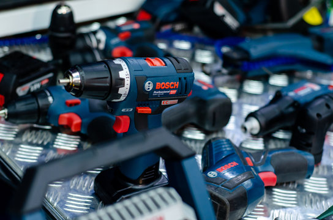

Ferramentas elétricas e instrumentos de medição que aumentam a produtividade e a segurança na obra — de esmerilhadeiras e marteletes a trenas laser e detectores de materiais.

Fundada por Robert Bosch em Stuttgart, em 1886, a Bosch é hoje uma das maiores fabricantes de ferramentas elétricas e instrumentos de medição do mundo, presente em mais de 60 países e sinônimo de engenharia de precisão.
Esmerilhadeiras, marteletes, serras, trenas laser e detectores
Corte, furação, fixação e medição em Steel Frame e Drywall
Padrão profissional adotado no mundo todo
Para entrar no mix da Espaço Smart, uma marca precisa se encaixar em pelo menos um dos pilares do Smart Think. A Bosch atende a quatro deles: